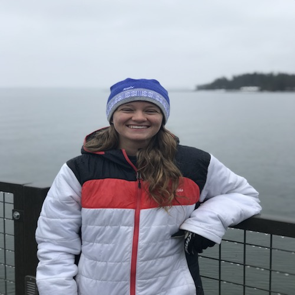
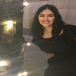
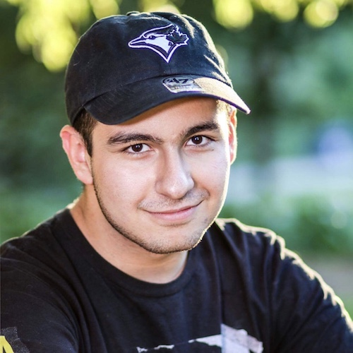

Staff
Instructors¶
Teaching Assistants (uGSIs)¶
|
Adeel Cheema (bio) I am a 4th year computer science major and this is my fourth semester as a uGSI for Data 8. In my spare time, I like to take pictures (acheema.com) and look at cars I can't afford on craigslist.
acheema@berkeley.edu
Lab: Wed 2pm - 4pm in Evans 458
|
Aidan De Angelis (bio) I'm a third year Computer Science major from Davis, CA. I took Data 8 my Fall semester freshman year and I absolutely fell in love with it. In my free time I like to hike, play paintball, and find good deals on Craigslist. I hope you learn to love Data 8 just as much as I do and I'm stoked to meet you all!
aidandeangelis@berkeley.edu
Lab: Thu 4pm - 6pm in SDH 254
|
 Akriti Singh (bio) Hello! I am a senior studying CS & Data Science and I'm excited to be TAing for Data 8 for a third semester. In my free time, I like trying new restaurants, all forms of art (catch me doodling during classes), and buying things with nice packaging that I don't need.
akritisingh@berkeley.edu
Lab: Thu 4pm - 6pm in Evans B6
|
Ananya Krishnan (bio) I am a sophomore studying cognitive and data science from sunny San Diego. I am interested in learning about cognitive processes and decision making with modeling and data. In my free time, I enjoy watching TED Talks, going on hikes, attempting to bake, and eating lots of ice cream. I am excited to be part of the Data 8 staff this year and hope to meet you this spring!
ananya.krishnan@berkeley.edu
Lab: Thu 8am - 10am in SDH 254
|
 Andrew Linxie (bio) Hello, I am a senior majoring in CS and Statistics excited to be teaching Data 8 once again. In my free time I enjoy watching impossible youtube cooking videos, buying gummy bears by the pound and basking in awkward silence with my friends/peers. Looking forward to meeting you all!
alinxie@berkeley.edu
Lab: Wed 4pm - 6pm in Cory 105
|
 Anna Nguyen (bio) Hello! My name is Anna and I'm a third-year Public Health and Data Science major with a concentration in Epidemiology and Biostatistics. I'm interested in global health development, infectious disease monitoring, and human-centered health interventions -- but still somehow manage to get sick every semester. To avoid work, I like making poorly curated Spotify playlists, planning out vacations I can't afford, and scrolling through Dogspotting on Facebook. Data 8 has been my favorite class here at Cal, and I hope you enjoy it as much as I did!
anna-nguyen@berkeley.edu
Lab: Wed 6pm - 8pm in SDH 254
|
 Annie Nguyen (bio) just a human bean.
vienannguyen@berkeley.edu
Lab: Wed 2pm - 4pm in Evans B6, Thu 2pm - 4pm in Cory 105
|
 Avery Yip (bio) Hey! I am currently a junior studying computer science & data science. I love traveling and blowing my money on tasty foods and unique dishes around the world. If you ever see me or have any questions, feel free to drop by and say hi!
averyyip@berkeley.edu
Lab: Thu 10am-12pm in Evans B6
|
 Claire Zhang (bio) Hi! I’m a third year English major from the Bay Area. This will be my fifth semester teaching Data 8, and I’m excited to return! In my free time, I enjoy playing taiko, drawing, and writing. Hope y’all have as much fun in this class as I did!
clairezhang@berkeley.edu
Lab: Thu 2pm - 4pm in Evans 458
|
 Colby Lewis V (bio) Colby FIVE. Punchy biography. This semester I'm trying to convince myself that managing stress is FUN. When I'm not taking or working for class I like to cook, listen to podcasts, and have friends over for board game nights. Sometimes the podcasts spill over into class time.
colbylewis2020@berkeley.edu
Lab: Thu 10am - 12pm in Evans 340
|
 Divyesh Chotai (bio) I enjoy basketball, board games, ultimate frisbee, and laughing until my sides hurt!
dchotai@berkeley.edu
Lab: Wed 12pm - 2pm in Evans 458
|
 Emily Chang (bio) I am a fourth year computer science major from the San Gabriel Valley. In my free time, I enjoy eating, reading and swimming. You can probably find me at coffee shops or gawking at puppies around campus!
echang7@berkeley.edu
Lab: Wed 4pm - 6pm in Evans 342
|
 Emma Jaeger (bio) Hi everyone! I'm Emma, a third year CS major from the Northern Virginia area. When I'm not busy studying or teaching data science, I like weightlifting, photography, and eating good food. I'm looking forward to a great semester and getting to know many of you better! :~)
emmajaeger@berkeley.edu
Lab: Wed 4pm - 6pm in Evans B6, Thu 2pm - 4pm in Evans B6
|
 Francie McQuarrie (bio) Hi I'm Francie! I am a third-year Statistics major with a minor in Computer Science. I enjoy big dogs, speed-reading 800 page Sci-Fi/Fantasy novels, speed-walking around campus, and speed-talking about all sorts of subjects. I have been involved with Data8 since first semester freshman year, and aim to help people love data science as much as I do.
fmcquarrie3@berkeley.edu
Lab: Thu 8am - 10am in Cory 105
|
 Howard Ki (bio) Hey everyone! My name is Howard and I'm a third year computer science major from South Florida. I really, really like Data 8 (this is going to be my fifth semester on staff), so I'm looking forward to sharing in the beauty of this course with all of you!
howardki888@berkeley.edu
Lab: Wed 4pm - 6pm in Evans 458, Thu 12pm - 2pm in Evans 458
|
 Ian Castro (bio) I'm a second-year studying media studies and microbial biology from the Bay Area. My interests are a bit all over the place, from constitutional law to biotech, so feel free to ask me any questions– even if they're only tangentially related. In my free time, I enjoy watching cooking videos, consuming caffeine, and listening to indie music. Looking forward to meeting everyone!
castro.ian@berkeley.edu
Lab: Thu 6pm - 8pm in Evans B6
|
|
Jacob Warnagieris (bio) I'm a third year Data Science major from SoCal, and this will be my fourth semester with Data 8 staff. When I'm not studying, I love to watch movies, travel, and rock climb. I'm looking forward to a great semester!
jwarnagieris@berkeley.edu
Lab: Thu 10am - 12pm in Evans 458
|
Jade Yen (bio) Hi everyone! I am so excited to be apart of Data 8 for my 6th semester at Cal! I'm a third year Computer Science and Cognitive Science major (+ possibly Data Science trying to make the world a better place with ~science. Outside of class, I love to read behavioral economics books, watch Bon Appetit videos, listen to sad music, stalk professors, and make my friends MeMojis. Ask me about my opinions on crunchy vs smooth peanut butter, SoCal vs NorCal, and other hot takes! I take any and all music, book, podcast, and vegan food recs!
jadeyen@berkeley.edu
Lab: Thu 2pm - 4pm in SDH 254
|
 Jessica Hu
j.hu@berkeley.edu
Lab: Wed 12pm - 2pm in SDH 254
|
 Jiayi Huang (bio) Hey everyone! My name is Jiayi and this is my 5th time teaching this course as a uGSI. My main responsibility is to make sure that YOU are getting the SUPPORT you need to not only succeed, but thrive in this course and beyond while having a pleasant time learning about Data Science! When I am not teaching, I enjoy singing, playing tennis, and grocery shopping at 99 Ranch :). Let's make this semester a wonderful journey for all!
huangjiayi0922@berkeley.edu
Lab: Wed 4pm - 6pm in SDH 254
|
|
Juliann Nguyen (bio) Hi! I'm a third year studying Statistics and Data Science. When I have some free time, I enjoy tv show binging, baking and consuming the products of those bakes, as well as dogs in real life, photos, or videos. I'm super excited to be on staff this semester and am looking forward to working with you all!
juliannnguyen@berkeley.edu
Lab: Friday 8am - 10am in Evans 340
|
Katherine Yen (bio) Hi! I'm a third-year computer science major from the Bay Area. I enjoy cooking/following food blogs, hiking, and petting adorable dogs. Please feel free to reach out - happy to chat about Data 8, statistics, recipes, and life in general!
katherine.yen@berkeley.edu
Lab: Wed 2pm - 4pm in Evans 342, Thu 12pm - 2pm in Evans B6
|
 Krista Hayakawa (bio) Hi! I'm a third year studying Data Science with a minor in Computer Science. I took Data8 my first semester at Cal, and it has been my favorite class so far! I am on the cheer team (if you couldn't tell from my pic), and I love watching Grey's Anatomy!
keh7@berkeley.edu
Lab: Thu 2pm - 4pm in Evans 340
|
Lillian Louie (bio) Hi everyone! I'm a third year data science major from Oakland, CA. You can probably find me at a coffee shop either catching up on homework or watching my daily dose of korean dramas. Data8 has definitely changed my college experience, and I hope you'll enjoy the class as much as I did!
lillianlouie@berkeley.edu
Lab: Wed 6pm - 8pm in Evans 458
|
|
Lois Chang (bio) Hello! I'm a fourth year studying Computer Science from SoCal. I love hiking, biking, and board games. I'm also always looking for new places to eat so if you have good restaurant recs, let me know and we can go try it together :)
loischang@berkeley.edu
Lab: Thu 10am - 12pm in SDH 254
|
Makena Schwinn (bio) Hi there! I'm a third-year majoring in Computer Science and Business. This is my second semester as a UGSI and 5th (!!) semester on Data 8 staff - I love this class. Outside of school, I mostly like to do outdoor activities and go to concerts, or just stay home with my cats, friends, and/or TV. Feel free to reach out with any questions or concerns!
makenaschwinn@berkeley.edu
Lab: Wed 6pm - 8pm in Evans B6
|
 Nanxi Wang (bio) I'm a senior computer science major from San Jose, and this will be my 6th semester on Data8 staff! In my free time, I like to cook, watch food videos on youtube, look at dog photos on Dogspotting, and play Overwatch! Please share recommendations for new movies or tv shows with me. :~)
nwang97@berkeley.edu
Lab: Thu 12pm - 2pm in SDH 254
|
 Natalia Mushegian (bio) Hi! I'm Natalia, and this is my 6th time as a GSI for Data 8 (where has the time gone?). I'm a Molecular Environmental Biology major and Forestry minor, and I'd love to talk to you about applying data science to whatever discipline you're interested in - everyone has a place in data science! Other interests: swing dancing, cooking, telling people plant facts, fermentation, and climate change mitigation!
nataliam@berkeley.edu
Lab: Thu 8am - 10am in Evans B6, Friday 8am - 10am in Cory 105
|
|
Niraj Rao (bio) You can probably tell what kind of person I am just by looking at my picture.
niraj.a.rao@berkeley.edu
Lab: Wed 12pm - 2pm in Evans B6, Thu 4pm - 6pm in Cory 105
|
Olivia Lewke (bio) Hello! I am a third year English and Data Science double major from Palm Springs. If I'm not complaining about how cold it is here, I'm probably reading, dogwatching on the glade, or spending too much money on eating out. This will be my second semester on Data 8 staff, and I'm excited to meet everyone! This course made me fall in love with data science and I hope that it will do the same for you.
olivialewke@berkeley.edu
Lab: Thu 8am - 10am in Evans 458
|
 Oscar Syu (bio) Hi! I'm a junior from Palo Alto studying data science and economics, with an interest in implications of data and technology on business, world development, and governance. When I'm not busy, you can catch me downing enormous quantities of coffee or tea, bricking open 3 pointers, running (when I feel like it), or trying out new AC Transit bus routes to random places. This is my 4th semester on staff and I'm looking forward to meeting you all!
oscar.syu@berkeley.edu
Lab: Fri 8am - 10am in Evans B6
|
Ravi Singhal (bio) Hello! I am a junior majoring in Data Science and minoring in Computer Science. I love sports and am a passionate basketball fan. This is my fourth semester being a uGSI for Data 8 and my first being one of the leads. I am super excited to be a part of this amazing class again!
ravi.singhal@berkeley.edu
Lab: Wed 12pm - 2pm in Cory 105, Wed 2pm - 4pm in Cory 105
|
 Rebecca Woolf
rwoolf@berkeley.edu
Lab: Wed 2pm - 4pm in SDH 254
|
 Rishab Srivastava (bio) Hey! I’m a junior from India studying Computer Science & Economics. I’m broadly interested in technology, macroeconomics and investing. In my free time, I enjoy watching soccer, reading non-fiction, listening to indie music and creating Spotify playlists. Excited to meet all of you!
rishab.s@berkeley.edu
Lab: Wed 6pm - 8pm in Cory 105
|
 Rohan Narain (bio) Hello! I'm a third year Statistics and Data Science student from San Jose, CA, and I'm very excited to meet you all! I'm a huge baseball fan, and I enjoy discussing music, movies, and the San Francisco Giants. I also really love statistics, so if you have questions about studying statistics and/or data science at Cal, please feel free to ask!
narain.rohan@berkeley.edu
Lab: Thu 6pm - 8pm in SDH 254
|
Sabrina Liu (bio) I'm a fourth year studying Economics, Statistics, and Music. I love everything about my hometown of Pittsburgh, especially the sports teams in it. If you have a good recipe for potatoes, please let me know; it's for 'science'
liusabrina@berkeley.edu
Lab: Thu 6pm - 8pm in Cory 105
|
 Sathvik Nair (bio) Hello there! I'm a junior from the Bay Area studying computer science and cognitive science, interested in applying data-driven solutions to societal issues, so love learning about technology and the mind. When I'm not poring over a Jupyter notebook, you can find me trying to cook, reading a book with a nice cup of tea, or playing a musical instrument. I've been involved with Data 8 for a year now as a tutor, and I'm excited to share my love for data science as a UGSI this semester!
sathviknair@berkeley.edu
Lab: Thu 4pm - 6pm in Evans 458
|
Scott Lee (bio) I like turtles, eating noodles, climbing rocks, and making music. I also enjoy stalking all of my TA's bios too.
scott.lee.3898@berkeley.edu
|
 Shoumik Jamil (bio) I'm senior studying Data Science with an emphasis in Cognition. I love watching sports, reading FiveThirtyEight, and listening to music in my spare time. Data 8 is my favorite course and I look forward to sharing my enthusiasm for Data Science with everyone!
sjamil@berkeley.edu
Lab: Thu 6pm - 8pm in Evans 458
|
 Subhiksha Mani (bio) Hi! I’m a senior studying data science and computer science. I enjoy playing around with different creative outlets, including photography and scribbling in random fonts. I appreciate all kinds of ice cream, Spotify’s New Music Fridays, and nice typography.
s.mani@berkeley.edu
Lab: Wed 12pm - 2pm in Evans 342
|
 Tamara Vilaythong (bio) Hi! I'm Tamara/Tam, and I'm a second year Computer Science major. I'm from San Diego so feel free to ask me about my love of tacos. I absolutely loved taking Data 8, have been involved with the course staff for two semesters now, and am excited to be a uGSI this semester! Looking forward to meeting all of you!
tvilayth@berkeley.edu
Lab: Fri 8am - 10am in Evans 458
|
Youmna Rabie (bio) I’m a third year double majoring in Econ and computer science! I was originally a physics major but switched to CS after taking Data8 my first semester here -- it's my favourite class at Berkeley! My hobbies include baking, learning languages, and reading, as well as watching a ridiculous amount of television. Feel free to reach out to me about anything, Data8-related or not!
youmnarabie@berkeley.edu
Lab: Thu 8am - 10am in Evans 340
|
Tutors¶
 Aanika Shah (bio) I’m from Mountain View, CA. In terms of interests, I am a huge sports fan (watching, not playing… I’m horribly uncoordinated); my favorite sport to watch is hockey but I pretty much love all sports. I love binge watching shows on Netflix like Grey’s Anatomy, One Tree Hill, and F.R.I.E.N.D.S, but I’m also a sucker for reality TV. I love to travel, bake, and just hang out with friends whether it is chatting at a cute coffee shop or playing board games late at night. I LOVE listening to music; my favorite decade is probably the 80s but I love current pop as well.
aanika.shah@berkeley.edu
|
Adele Bloch (bio) After taking Data 8 my freshman year, I fell in love with the idea of using data to make educated business decisions. Now, I am a junior at UC Berkeley double majoring in Business and Data Science, and I am entering my fourth semester as a Data 8 tutor. In my free time I love to run long distances, find new hiking spots, and try all the food that Berkeley has to offer.
adele.bloch@berkeley.edu
|
 Alvin Yu (bio) Hi everyone! I'm a second year data science major from the sleepy suburb of Temecula, CA. For me, Data 8 tutoring is a great chance to combine my growing interest in teaching & education with the opportunity to give back to my favorite class on campus. I enjoy running, dancing, sports, Settlers of Catan, Ted Talks, spending time with loved ones, and learning more about the world around us. Excited to learn & grow with all of you! #gobears
alvinyu27@berkeley.edu
|
 Angela Guan (bio) Hi everyone! My name is Angela Guan, and I am a second year student studying Data Science. I am on the Cal table tennis team, and I have traveled to every continent (except Antarctica). Some of my hobbies are baking, hiking, eating, trying new sports, traveling, and learning new languages. I really enjoyed Data 8, and I'm looking forward to working with you all!
guanangela@berkeley.edu
|
 Anna Christeson (bio) I am a junior majoring in data science with an emphasis in industrial and business analytics. I'm from a small town in the NorCal foothills and love being out in nature. I also like cooking and baking and of course Data 8.
anna.christeson@berkeley.edu
|
Ashley Quiterio (bio) Hi! I am rising sophomore pursuing Data Science. I am from Central California, but I love exploring the Bay. I'm very excited to meet you all. :)
ashleyquiterio@berkeley.edu
|
Ashutosh Bajpai (bio) I am a 2nd year Data Science major. I love working out, eating thai food, and testing my Data 8 learnings in friendly poker games.
ashu1bajpai@berkeley.edu
|

Barbara de Alfaro (bio) I’m a sophomore studying political science, and work/play with jupyter notebooks the rest of the time. Bay Area native, Tahoe lover, French/Italian speaker.
barbara.dealfaro@berkeley.edu
|
|
Caroline Chen (bio) Hello! I am a sophomore studying Statistics and Data Science. My bloodstream is 70% boba, 20% coffee, and 10% sleep deprivation. Can't wait to meet all of you!
carolinejchen@berkeley.edu
|
Connor Clark (bio) I am a second year from Burlingame, CA, studying Data Science. I love skiing and Philz coffee. One day I hope to work in management for a professional sports team.
connorcclark@berkeley.edu
|
Deven Barth (bio) I'm currently a sophomore studying data science and statistics. Originally from Louisville, Kentucky, I have lived across the country prior to Berkeley, including Arizona and the Bay Area itself. Outside of class, I enjoy photography as well as exploring new places. This is my first time on the Data 8 course staff, and I'm excited to work with you!
devennb@berkeley.edu
|
 Emily Zou (bio) Hi everyone! I am a second year CS major from the DC area. In my free time, I enjoy skating with the Cal Figure Skating Team, figuring out new ways to make coffee, and browsing Instagram for penguin pictures. I'm excited to be on staff again and I look forward to meeting you all!
emilykzou@berkeley.edu
|
 George Nacouzi (bio) I am a 3rd year studying Applied Math and Data Science. I have previously lab assisted and tutored for Data 8, tutored math courses, and currently facilitate a DeCal. Besides teaching, I love playing ultimate frisbee!
gnacouzi@berkeley.edu
|
Tianran Li (bio) I'm a 2nd year statistics major, intending to double major in computer science. This will be my first semester tutoring for data 8, but I was a lab assistant last semester. Fun fact about me: I have a dog at home that I named dinner so I can introduce him to friends as "that's our dinner".
fqzbdkh@berkeley.edu
|
Gregory King (bio) Hi all! I’m a second year from the San Gabriel Valley studying Economics. If I’m not complaining about the weather in NorCal or telling everyone how great SoCal is, you can catch me binge watching Netflix and HBO shows, creating Spotify playlists, or watching stand-up comedy!
gregking22@berkeley.edu
|
Gregory Du
gregoryd2017@berkeley.edu
|
|
Harim Lee (bio) Hey there! I'm a junior from San Jose studying Data Science and Computer Science. I'm super interested in computational biology and the intersection of health and technology. This is my first semester as a tutor, and I'm so excited to learn and grow with all of you!
harimlee@berkeley.edu
|
Himaja Jangle (bio) Hi! I am a 4th year Economics major with a minor in Demography. I am originally from Fremont and I have pretty much been in the Bay my entire life. You can usually find me around Berkeley in various coffee and boba shops. This will be my second semester as a tutor for Data 8 after being a lab assistant for 3 semesters and I am super excited to get to know you all!
himaja.jangle@berkeley.edu
|
 Hubert Luo (bio) I’m a third year studying statistics and applied math with a concentration in data science. Currently, I’m conducting research with the Stark Group and I was previously a researcher in the Family and Culture Lab. My interests are in applied statistics, sports analytics, and probability theory.
hubertluo@berkeley.edu
|
Irene Wang (bio) Hi I am Irene! I am a second year statistics major from San Diego. In my free time I enjoy drawing, reading, watching movies, and hanging out with friends. Data 8 is my favorite course, and I can't wait to teach you this semester!
irenerwang@berkeley.edu
|
|
Jacob Martinez (bio) Hey! I'm a third year CS major from the Bay Area. I really enjoy exploring different styles of music, playing guitar, watching and playing basketball, and writing! I'm excited to help out in this course and I'm looking forward to a great semester!
jacobmartinez@berkeley.edu
|
Jacqueline Wood
jacquiwood1@berkeley.edu
|
Javier Miranda Flores (bio) Hello All! I absolutely love teaching so I'm really glad to be joining the Data 8 Staff this semester and look forward to a great semester. On my free time I'm either hiking/exploring, reading, or pondering the meaning of life. Please feel free to reach out if you have any questions, or simply wanna chat!
javiermirandaflores@berkeley.edu
|
Jifu Li (bio) Hey friends! I’m a second year MCB major who dabbles with a little bit of data science. In my free time you can usually find me watching and playing football or basketball. I’m a Canadian citizen currently living in Florida but originally from China. Don’t hesitate to reach out to me for anything at all!
jifu.li@berkeley.edu
|
|
Jonathan Bodine (bio) Hi! I'm a second-year IEOR and EECS double major, this will be my first semester as a tutor for Data 8, although, I was an LA last semester. In my spare time, I like riding motorcycles, practicing martial arts, going to debate competitions, and cuddling my two cats, Jupiter and Zeus. I'm really excited to help out this semester!
jonathan.m.bodine@berkeley.edu
|

Kanika Ahluwalia (bio) Hi! I am a second year studying Data Science. This is my first time on staff and I am super excited to meet you all! In my free time, I enjoy trying new things, going outside, and finding cool food places!
kwalia1999@berkeley.edu
|
 Katherine Tsai (bio) I am a sophomore from Palos Verdes, CA studying Data Science and Cognitive Science. In my free time I like to take naps, dance, or get gelato with friends. Data 8 has been one of my favorite classes so far, and I am excited to get to know everyone this semester!
katherinetsai@berkeley.edu
|
 Katherine Zhao (bio) Hello! My name is Katherine, and I am a second-year studying Economics. I love traditional/digital painting, fencing, and attempting to cook. I look forward to a fantastic semester with you all!
katherine_zhao@berkeley.edu
|
|
Logan Ritter (bio) I am a second year studying Data Science. I was born and raised in Ohio. I also play Ultimate Frisbee and love biking.
lritter@berkeley.edu
|
Lucy Portnoff (bio) Hey everyone! I'm a third-year math major, and I love teaching. I also love art history and spend all my spare time in museums (ask me for recommendations!). Looking forward to a great semester of Data 8 :-)
lucyportnoff@berkeley.edu
|

Parham Rouzbahani (bio) I’m an Economics-Data Science loving sophomore from Toronto, Canada, eh? I’m a huge fan of dogs, board games, travelling and snow.
parouz@berkeley.edu
|
Roshan Srikant Srinivasan (bio) Hello! I am a sophomore studying Industrial Engineering and Operations Research. I'm really interested in learning more about you and your interests and look forward to helping you learn the material in this class. Some of my interests outside of academics include sleeping, trying new foods, and walking around Berkeley in the middle of the night.
roshansrin01@berkeley.edu
|
 Sam Wu (bio) Hey there! I am a sophomore studying Computer Science and Data Science, and I'm super excited to be on course staff again for Data 8 this semester! I'm from Vancouver, Canada, and I love to learn about the different cultures of the world (I speak English, Mandarin, and French)! Hit me up if you like anime, food, traveling, or learning new languages!
samwu101@berkeley.edu
|
 Saurav Mittal (bio) Hey! I'm a 2nd year EECS major from India. I'm super excited to be one of the tutors this semester. I took Data 8 in my first semester here, and I've been in love with it ever since. I hope you all enjoy the course as much as I did!
saurav@berkeley.edu
|
sksrikantan@berkeley.edu
|
Shashank Dalmia (bio) I am a sophomore trying to study a bit of everything, but mainly economics and statistics. I love travel, food and adventure sports. I follow soccer passionately and watch tv shows and movies to a fault.
shashankdalmia24@berkeley.edu
|
|
Sophia Tan (bio) Hi! I'm a second year from SoCal majoring in Molecular and Cell Biology. If I'm not in class, I'm probably binge-watching a new show or training with the Cal Taekwondo team. I also love jigsaw puzzles, Disney, and everything about the MCU. I'm excited to be more involved in Data 8 this semester and to meet you all!
sophiatan@berkeley.edu
|
Stephanie Djajadi (bio) Hi! I'm a second year studying computer science and data science. I really enjoyed Data 8, and I'm looking forward to a great semester!
sdjajadi@berkeley.edu
|
Steven Singorahardjo
ssingorahardjo@berkeley.edu
|
 Umar Maniku
manikui@berkeley.edu
|
|
Vikram Chandran (bio) I'm an EECS major and hopefully soon-to-be Data Science minor. I really love swimming and debate. I'm also a really big Westworld and Game of Thrones fan.
vikramchandran@berkeley.edu
|
Winifred Chung (bio) Hello there! I am a second-year studying computer science and data science. I find the intersection of technology and medicine super interesting and am particularly interested in the role that computer science plays in developing neuroprostheses. In my free time, I love making Spotify playlists, dabbling in photography, watching sunsets at the beach, and telling everyone how much I love my hometown, sunny San Diego.
winifredchung@berkeley.edu
|
 Wyatt Walsh (bio) I am a junior studying Industrial Engineering and Operations Research and am from a small town in Eastern Calfornia. In my free time, I like to watch the NBA, play FIFA, go to Hackathons, and, of course, spend time with friends.
wwalsh@berkeley.edu
|
 Yanay Rosen (bio) I am a second year intending to major in Computer Science. I was born in Israel but grew up in the suburbs around Boston. This is my second semester as a tutor and I also help development of the online version of Data 8, Data 8x. I love Data 8 and hope you will too!
yanayrosen@berkeley.edu
|
|
Yash Swarup Agarwal (bio) Hi! I’m a sophomore majoring in Computer Science. It’s my second time on staff. Looking forward to working with y’all! Always down to binge watch The Office, play Squash or Hike!
yashswarup@berkeley.edu
|
Yi-Nung Huang (bio) I am a senior studying statistics. I enjoy learning about machine learning and about how statistical techniques can be applied to data science. In my free time, I love trying new food and going on short trips!
yinungh@berkeley.edu
|